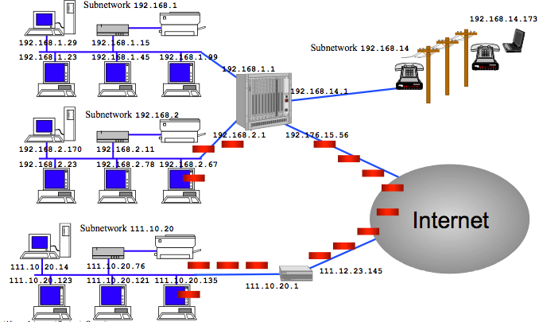
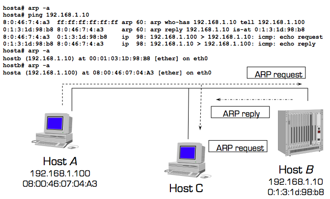

COMP 116: Introduction to Computer Security
Networking and Attacking Networks
Premise
- "The language of two computers talking to each other"
OSI Model

- Provides standards that allow hardware to focus on one particular aspect of communication that applies to them and ignore others
- 7 layers
- Physical - lowest level; primary role is communicating raw bit streams (e.g., Ethernet cable and card, "wires")
- Data link - Transferring data between two points; provides high level functions such as error correction and flow control (e.g., ARP, Ethernet)
- Network - middle ground; pass information between the lower and higher layers; provides addressing and routing (e.g., IP, ICMP)
- Transport - provides transparent and reliable transfer of data between systems (e.g., TCP, UDP)
- Session - establishes and maintains connections between network applications
- Presentation - allows for things like encryption and data compression (e.g., XML)
- Application
- DNS
- IMAP
- FTP
- SSH
- HTTP
- telnet
- POP
- many others
Packet
- Contains implementations of all the protocol layers
- Encapsulation model
- Think of an onion
Internet Control Message Protocol (ICMP)
- On Network layer of OSI model
- Testing and debugging protocol
- Used to determine whether a remote host is reachable
- Exchange control and error messages about the delivery of IP datagrams
- Messages:
- Echo (request)
- Reply (response)
- Error
ping- If ICMP is disabled, then packets are dropped without notification
- Other uses: inform about traffic overloads, obtain the network mask at boot time for diskless systems, synchronize clock
- Reference: RFC 792
Internet Protocol (IP)
- On Network layer of OSI model
- Similar analogy to your telephone number
- Port number: assigned to a network service
- Provides a connectionless, unreliable, best-effort datagram delivery service (delivery, integrity, ordering, non- duplication, and bandwidth is not guaranteed)
- IP datagrams can be exchanged between any two nodes --provided they both have an IP address
- Reference: RFC 791
- Normal size of header: 20 bytes
- Options: variable length
IP Addressing

- Each host has one or more IP addresses for each network interface
- IPv4 addresses are composed of 32 bit (class + netid + hostid)
- Represented in dotted-decimal notation:
XXX.XXX.XXX.XXX. Example: 128.111.48.69
- Classes:
- Class A (leading bit in address = 0): 2^7 number of networks, 2^24 number of addresses per network
- Class B (leading bits in address = 10): 2^14 number of networks, 2^16 number of addresses per network
- Class C (leading bits in address = 110): 2^21 number of networks, 2^8 number of addresses per network
- Class D - Multicast (leading bits in address = 1110): multicast addresses
- Class E (leading bits in address 1111): reserved or future use
- Special Addresses:
- Loopback: 127.0.0.1 (source and destination)
- Reserved addresses (RFC 1918):
- 10.0.0.0 - 10.255.255.255
- 172.16.0.0 - 172.31.255.255
- 192.168.0.0 - 192.168.255.255
TCP/IP
- On Transport layer of OSI model
- Think of the post office
- Transparent, bidirectional, and reliable
- Guarantees delivery of data in proper order thanks to IP protocol
- Reference: RFC 793
- Flags:
- URG - Urgent
- ACK - Acknowledgement
- PSH - Push
- RST - Reset
- SYN - Synchronize
- FIN - Finish
- "Handshaking": client sends SYN packet => server sends SYN-ACK packet => client sends ACK packet (be sure to check out sequence and acknowledgement numbers)
User Datagram Protocol (UDP)
- On Transport layer of OSI model
- Relies on IP to provide a connectionless, unreliable, best-effort datagram delivery service
- In other words, may be dropped before reaching targets a.k.a., fast
- Delivery, integrity, non-duplication, ordering, and bandwidth is not guaranteed
- Unlike TCP/IP, no handshaking!
- No sequence numbers
- Applications: DNS
- Reference: RFC 768
Ethernet
- On Data Link layer of OSI model
- Destination address: 48 bits in the format
XX:XX:XX:XX:XX:XX. Example: 09:45:FA:07:22:23)
- Source address: ditto
Address Resolution Protocol (ARP)
- On Data Link layer of OSI model
- The idea of ARP: get Ethernet address of host with IP address (very much like delivering mail to an office building)
- ARP request message, think of it this way: "Hey who has this IP? If it's you, please respond and tell me your MAC address"
- ARP reply message, think of it this way: "This is my MAC address and I have this IP address"
- Host A wants to know the hardware address associated with IP address of host B
- A broadcasts a special message to all the hosts on the same physical link
- Host B answers with a message containing its own link-level address
- A keeps the answer in its cache (20 minutes)
- To optimize traffic, when A sends its request, A includes its own IP address
- The receiver of the ARP request will cache the requester mapping
- ARP messages:
- Hardware type
- Protocol type
- Hardware size
- Protcol size
- Op (1 = ARP request; 2 = ARP reply)
- Sender Ethernet address
- Sender IP address
- Target Ethernet address
- Target IP address
- Illustrated: 
- Reference: RFC 826
Domain Name Systems (DNS)
- On Application layer of OSI model
- Mapping of IP addresses to domain names and vice versa
- The name space is hierarchically divided in domains
- Each domain is managed by a name server
- Servers are responsible for mapping names in a zone
- Root servers are associated with the top of the hierarchy and dispatch queries to the appropriate domains
- A server that cannot answer a query directly forwards the query up in the hierarchy. The results are maintained in a local cache for a limited time (which can range from minutes to days).
- Queries can be recursive
- Clients access name server resolution services through the resolver library (gethostbyname(), gethostbyaddr())
- DNS uses mostly UDP and sometimes TCP for long queries and zone transfers between servers (port 53)
- See: domain hierarchy
- Clients use
/etc/resolv.conf to find out what the servers for the domain are
- Tools:
dig, host, nslookup
- Reference: http://technet.microsoft.com/en-us/library/cc775637(WS.10).aspx
Musings on IPv6
- Uses 128-bit addresses (and hopefully we'll never run out of IP address again)
- IPv6 packets carry more address information in the header
- Better Quality of Service (QoS)
- Extension header: you can add any information that you want
- IPSec: built into the IP layer for IPv6, mandated. Architecture:
- Security association - defined before start of communication a.k.a., algorithm to use for encryption
- Authentication Header (AH) - extension that provides integrity and authenticity
- Encapsulating Security Payload (ESP) - extension that provides confidentiality
- Currently, AH and ESP useless
- The big issues:
- The IPv4-IPv6 dual stack
- Header manipulation
- Mobility - the idea: having a real address (in the extension header) and a mobile address, a temporary
- June 8, 2011: Google, Facebook, Yahoo! turn on IPv6
Types of Attacks
- Sniffing
- Spoofing
- Hijacking
Goals of Attacks
- Denial of Service
- Impersonation
- Information access
- Delivery tampering
Sniffing
- Switched network - Ethernet packets pass through a specific device on the network
- Unswitched network - Ethernet packets pass through every device on the network, expecting each system device to only look at the packets sent to the destination address. This is what we want!
- Promiscuous mode - Look at all packets regardless of destination address
- Access all the traffic on your network
- Why sniffing? Most of the traffic on your network are unencrypted, "in the clear"
- Can be extremely valuable (but alas, privacy issues abound)
- Plethora of tools, passive programs (IMPORTANT: requires
sudo or root):
- libpcap - Platform-independent library and API to perform traffic sniffing
Detecting Sniffers
- Is
PROMISC on device's ifconfig profile?
- Latency
- Suspicious DNS lookups
Defense Against Sniffers
Fragmentation
- Splitting packets into smaller chunks
- Depends on the data link layer's MTU (Maximum Transmission Unit); if size of packet > MTU, need to fragment
- For Ethernet, MTU should be 1500 bytes
- If IP packet has "do not fragment" flag set, an ICMP error message is sent back to the originator
- The IP layer is responsible for reassembling the fragmented packets at the destination
- On packet fragmentation:
- IP header is the same on all packets
- The datagram ID is copied on all packets
- The "more fragments" flag is set with the exception of the last fragment
- The "fragmentation offset" field contains the position of the fragment with respect to the original datagram expressed in 8 byte units
- The "total length field" is changed to match the size of the fragment
- If one fragment is lost the entire datagram is discarded after a timeout
- Uses:
- Firewall testing
- How it works: some firewalls make a decision on the first fragment and let the other fragments through by keeping track of the datagram ID
- Port scanning
- Network testing
- Bypassing Intrusion Detection Systems
- How it works: Some IDSs do not reassemble fragments
- Denial of Service
- Tools:
Ping Flooding
- Self explanatory
- Goal: use up all the victim's bandwidth
- Resolution: nothing
Smurf
- ICMP echo attack
- Amplification attack; a network used to carry out the attack
- The idea: send large ICMP echo request packets to the broadcast address of the amplification network with spoofed source address to the victim's system
- The amplification network will send corresponding ICMP echo reply packets to spoofed source address --the victim
- Read: http://www.cert.org/advisories/CA-1998-01.html
- Defense: configure the router or systems to not to respond to ping requests
Scanning
- ICMP echo request messages can be used to map the hosts of a network (pingscan or ipsweep)
- ICMP echo datagrams are sent to all the hosts in a subnetwork
- The attacker collects the replies and determines which hosts are actually alive
- TCP SYN scan: Does not open a full TCP connection. If a SYC/ACK packet is received in response, then the port must be accepting connections!
nmap
SYN Flooding
- The idea: exhaust states in the TCP/IP stack
- Recall TCP/IP handshaking
- Attacker sends SYN packets with a spoofed source address, the victim, (that goes nowhere)
- Victim sends SYN/ACK packet but attacker stays slient
- Half-open connections must time out which may take a while
- Alas, good SYN packets will not be able to go through
- Tools:
- Defense:
Man-in-the-Middle (MITM)
- Active eavesdropping
- Attacker relays traffic to victim
- Attacker controls entire conversation between victim and host
- Where found: open wireless access points
- Tools to conduct attack:
- Ettercap
- dsniff (particularly sshmitm and webmitm)
- Cain & Abel
- Defense:
- Strong encryption / public key infrastructure
TCP Hijacking
- Take control of a connection between a victim and host machine
- Useful when user authenticates to another system --unencrypted
- Attacker must be on the same network as the victim
- You can consider this a man-in-the-middle attack
- Recall: each TCP packet contains an incremented sequence number in the header to ensure packets are received in proper order
- Attacker sends a spoofed packet from the victim's IP address to the host machine using a sniffed sequence number to provide a proper acknowledgement number
- Again, the key is: the correct sequence / acknowledgment numbers must be used
- Read: Simple Active Attack Against TCP http://insecure.org/stf/iphijack.txt
- Example: http://staff.washington.edu/dittrich/talks/agora/script.html
- Tool to conduct attack: hunt http://www.packetstormsecurity.org/sniffers/hunt/
- Still a very real threat
- Defense:
- Encryption
- Use a switched network
TCP/IP Spoofing
- Still prevalent in network scanning and probes, as well as DoS
- Forge the IP header to have a different source address than your real one
- Misconception: hide your identity to surf the web
- Impersonating another host when establishing a TCP connection
- Consider victim connecting to host; attacker kills off victim; attacker sends TCP SYN segment in a spoofed IP packet with victim's address as the source IP and a sequence number
- Two methods:
- Non-Blind - On the same subnet; need to eavesdrop acknowledgement numbers. Recall the importance of them: ensures packet delivery by determining whether or not a packet needs to be resent
- Blind - Guess the acknowledgement numbers.
- Read:
- Tools to conduct spoofing:
- Defenses:
- Packet filtering at the router level
- Access Control List
- Encryption
- Authentication
ARP Spoofing
- The idea: attacker returns MAC address of host with a particular IP address...
- ...thus any traffic meant for that IP address would be mistakenly sent to the attacker
- It is possible to provide a fake ARP reply even if a request has not been sent
- ARP-spoofing tools repeatedly send spoofed ARP replies to keep the ARP cache into the desired state
- Tools:
- arpspoof (part of Dug Song's dsniff suite). Usage:
arpspoof -t VICTIM_IP GATEWAY_IP. Important: you should also enable IP forwarding via echo 1 > /proc/sys/net/ipv4/ip_forward
- Ettercap
- Defense:
- ArpOn
- arpwatch - Monitor changes in ARP tables
- Reading: ARP Spoofing
But What About a Switched Network?
- Does not allow direct sniffing but not really the solution (and somewhat easy to bypass)
- What could you do?
Many thanks to Giovanni Vigna for permission to use his notes.